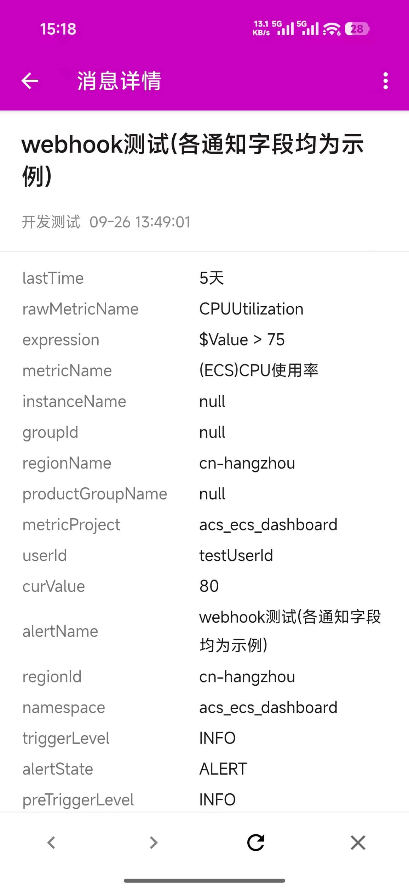
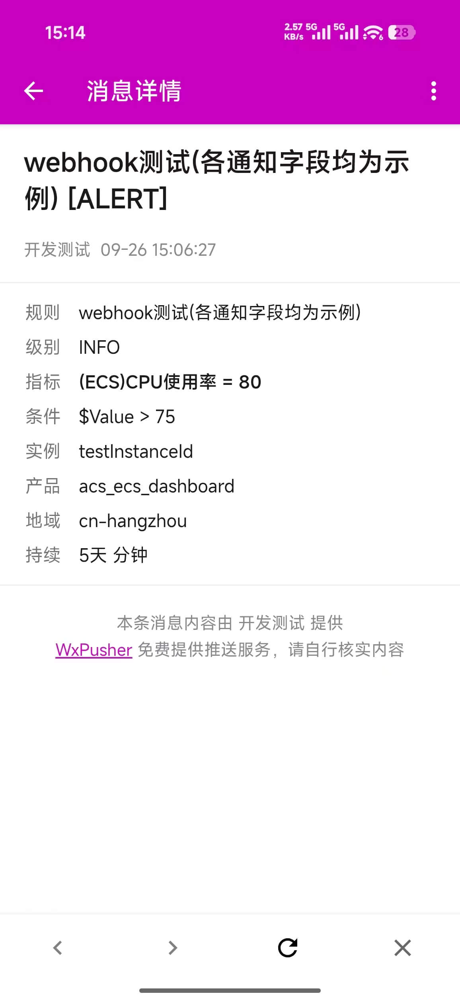
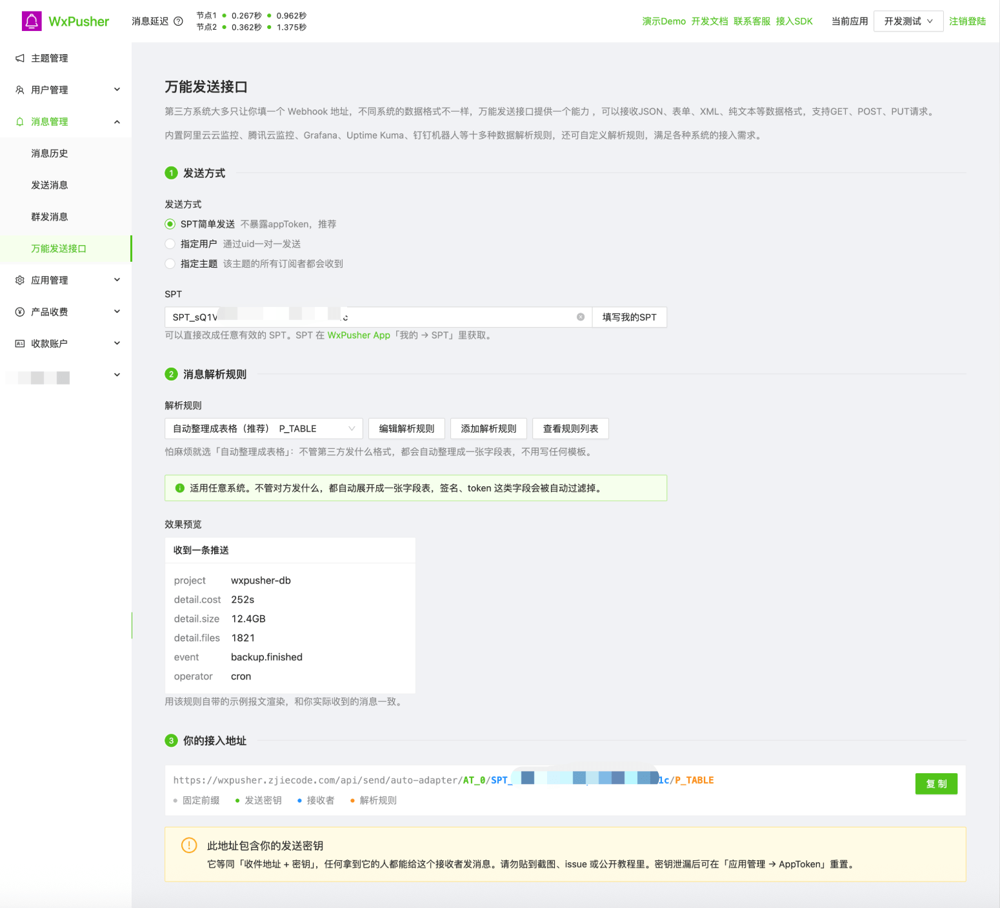
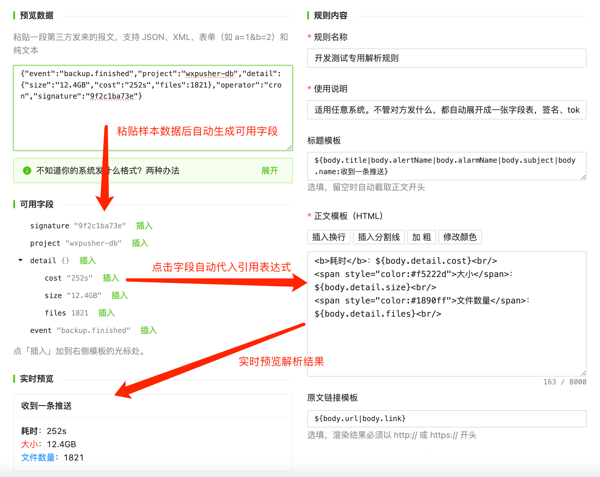

WxPusher 万能消息发送接口：适配各种系统格式的消息发送回调请求Webhook
很多系统都能配置告警回调或 Webhook 通知，比如云监控、Grafana、Uptime Kuma、GitHub、CI 流水线，还有各种自建脚本。它们通常只给一个输入框，让你填一个 URL。
麻烦在于，每个系统发出来的数据格式都不一样：阿里云发表单，Grafana 发 JSON，还有系统发 XML 或纯文本。以前想把这些通知推到手机上，要么找现成的适配工具，要么自己写个中转脚本做格式转换。
现在，WxPusher 的「万能发送接口」可以直接接收这些通知：在后台生成一个地址，填到第三方系统里。对方发什么格式都能接住，整理好后推送到你的手机。
同一条告警，两种看法
下面是同一条阿里云云监控告警，分别用两种解析规则收到的效果。

第一张用的是「自动整理成表格」规则：不需要任何配置，对方发来的字段会原样整理成一张表。适用于任何系统，拿不准选什么规则时，选它就可以。

第二张用的是内置的「阿里云云监控」规则：标题带上了告警状态，正文只保留规则、级别、指标、条件等关键信息，一眼就能看清发生了什么。
每条消息由标题、正文、原文链接三部分组成。选用哪条解析规则，决定了从数据里取哪些字段、怎么排版。
三步生成接入地址
登录 WxPusher 管理后台，进入「消息管理 → 万能发送接口」。
全程可视化操作，使用非常简单。

- 发送方式：个人使用选「SPT 简单发送」，点「填写我的 SPT」一键填入，不需要创建应用，也不会暴露 appToken。要发给其他用户或某个主题的所有订阅者，就选「指定用户」或「指定主题」。
- 消息解析规则：默认是「自动整理成表格」。如果对方正好是内置支持的系统，选对应的规则效果更好。下方的效果预览就是实际收到的样子。
- 复制地址：粘贴到第三方系统的 Webhook 配置里，就完成了。
阿里云的配置位置在「云监控 → 报警联系人 → 报警回调」。它发的是表单格式，里面还有一些非标准写法，这些都已经处理好了，填入地址就能用。
支持哪些格式和系统
数据格式：JSON、表单、XML、纯文本都能识别，GET 请求可以读取 URL 上的参数。支持 GET、POST、PUT 请求。WxPusher智能识别内容格式，可视化的编辑解析规则。
内置规则：
| 规则 | 适用场景 |
|---|---|
| 自动整理成表格（推荐） | 任意系统 |
| 原样发送请求体 / 发送完整请求 | 查看对方到底发了什么 |
| 阿里云云监控、腾讯云可观测 | 云监控告警回调 |
| Grafana / Alertmanager、Uptime Kuma | 监控告警、网站可用性监控 |
| GitHub Webhook | 仓库的 Push、PR、Issue 等事件 |
| 钉钉、企业微信、飞书机器人格式 | 原本推送给这些机器人的系统 |
| Server酱、Gotify、Bark、Slack 格式 | 原本推送给这些服务的脚本 |
最后两类可以这样用：如果你的脚本原来是推送给钉钉机器人、Server酱或 Bark 的，代码一行都不用改，把地址换成 WxPusher 的就行。
自己写解析规则
内置规则不够用时，可以点「添加解析规则」自己写，或者在已有规则的基础上「另存为」一份再改。

左边粘贴一段对方发来的数据，下方会列出所有可用字段。点字段后面的「插入」，右侧模板里就会写入对应的取值表达式。最下方会实时显示渲染效果，一边改一边看。
模板里用 ${...} 取值，正文支持 HTML 和样式。几个常用写法：
| 写法 | 作用 |
|---|---|
${body.detail.cost} | 按字段路径取值 |
${body.title|body.subject} | 依次尝试，取第一个有值的字段 |
${body.level:未知} | 字段为空时显示默认值 |
${body.alerts[*].name} | 取出数组里的每一项，逐行显示 |
${header.X-Event}、${query.token} | 读取请求头和 URL 参数 |
对方数据里的内容会自动转义，脚本等不安全的内容会被过滤掉，不用担心被注入。
获取第三方发送内容格式
先选「原样发送请求体」规则，生成地址填进去，触发一次，手机上收到的就是对方发来的原始数据。复制下来，粘贴到规则编辑器里，有哪些字段就一目了然了。
也可以用 webhook.site 生成一个临时地址，在网页上查看完整的请求，看完记得删掉。
开始使用
登录 WxPusher 管理后台，进入「消息管理 → 万能发送接口」即可使用，全程可视化编辑，使用非常简单，欢迎体验。
和其他功能一样永久免费，遇到问题欢迎反馈。